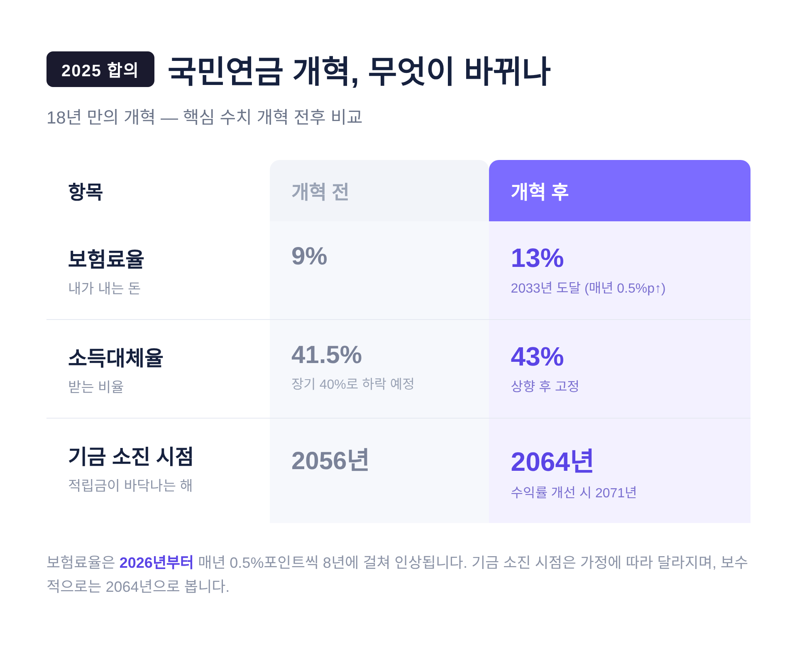
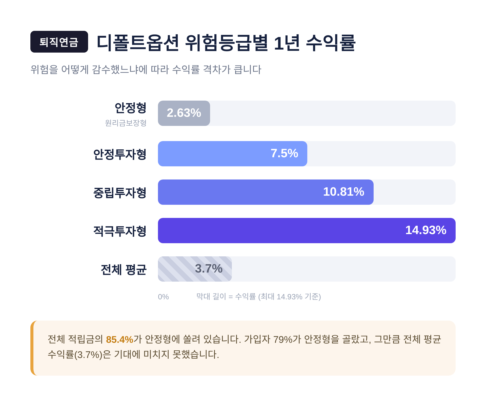
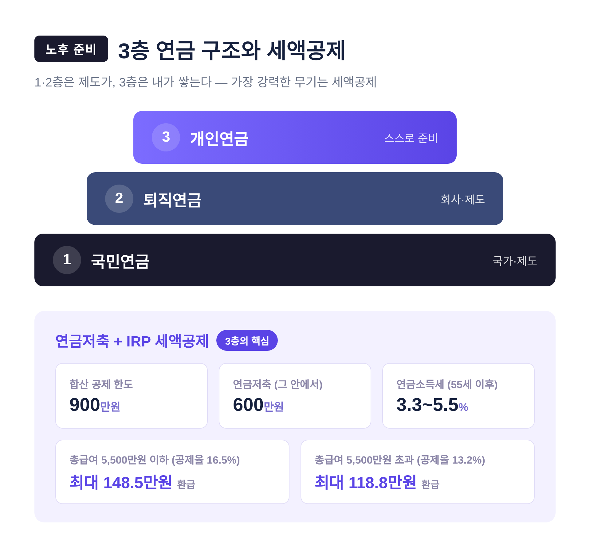

국민연금 개혁 2026, 더 내고 더 받는 시대 — 내 노후 대비법

2026년부터 국민연금 보험료율이 오릅니다. 18년 만의 개혁이 첫 시행을 맞는 해입니다.
이번 글에서는 무엇이 바뀌는지, 그리고 달라진 제도 안에서 노후를 어떻게 준비하면 좋을지 정리해 보겠습니다.
핵심부터 말씀드리면 이렇습니다. 보험료율은 9%에서 13%로 단계적으로 오르고, 소득대체율은 43%로 고정됩니다. "더 내고 더 받는" 구조로의 전환입니다. 다만 부담과 혜택이 세대마다 다르게 닿는다는 점, 그래서 개인연금까지 함께 봐야 한다는 점이 이 글의 결론입니다.
■ 2025년에 무엇이 합의되었나
2025년 3월 20일, 여야가 국민연금 개혁안에 최종 합의했습니다. 2007년 이후 18년 만의 개혁입니다.
개정된 국민연금법은 2026년부터 시행됩니다.
방향은 분명합니다. 예전엔 "덜 내고 받는" 구조의 지속 가능성이 문제였습니다. 지금은 "더 내고 더 받는" 쪽으로 방향을 틀었습니다.
핵심 수치는 세 가지입니다.
| 항목 | 개혁 전 | 개혁 후 |
|---|---|---|
| 보험료율 | 9% | 13% (2033년 도달) |
| 소득대체율 | 41.5% (장기 40%로 하락 예정) | 43%로 상향·고정 |
| 기금 소진 시점 | 2056년 | 2064년 (수익률 개선 시 2071년) |
보험료율은 2026년부터 매년 0.5%포인트씩 8년에 걸쳐 올라 2033년에 13%에 도달합니다.
소득대체율은 본래 매년 낮아져 40%까지 떨어질 예정이었으나, 이번에 43%로 끌어올려 고정했습니다.
기금 소진 시점은 가정에 따라 달라집니다. 보험료율과 소득대체율 조정만 반영하면 2064년, 여기에 기금 투자수익률을 4.5%에서 5.5%로 끌어올린다고 가정하면 2071년까지 연장될 수 있다는 전망입니다.
다만 수익률 5.5% 달성은 아직 확정된 전제가 아닙니다. 보수적으로는 2064년으로 보는 편이 안전합니다.

■ 2026년, 첫해에 실제로 달라지는 것
시행 첫해인 2026년의 변화는 다음과 같습니다.
- 보험료율이 9%에서 9.5%로 오릅니다. 1월부터 적용되는 첫 인상분입니다.
- 소득대체율 43%가 명문화되어 적용을 시작합니다.
- 출산·군복무 크레딧이 확대됩니다. 자녀 1명당 12개월이 추가되는 식입니다.
- 저소득 지역가입자 지원이 강화됩니다. 계속 납부 중이라도 일정 소득 이하라면 12개월간 보험료의 절반을 국가가 지원합니다.
부담이 얼마나 늘어나는지 가늠해 보겠습니다.
월급 309만원인 직장인이라면 월 약 7,700원을 더 냅니다. 직장인은 본인과 회사가 절반씩 나눠 부담합니다.
참고로 기준소득월액은 2026년 7월부터 2027년 6월까지 하한 41만원, 상한 659만원이 적용됩니다.
9.5% 기준으로 월 보험료는 약 38,000원에서 605,150원 사이가 됩니다.
■ 자동조정장치는 왜 빠졌나
이번 개혁에는 빠진 것도 있습니다. 자동조정장치입니다.
자동조정장치란 인구구조나 경제 상황 변화에 맞춰 법 개정 없이도 납부액·수령액을 자동으로 조정하는 제도입니다. 현재 OECD 38개국 가운데 24개국이 이미 도입했습니다.
이번에는 도입이 보류됐습니다. 야당이 소득대체율 43%를 받아들이는 대신, 여당은 자동조정장치 도입을 미루는 선에서 절충했습니다.
반대 논리는 수급액의 예측 가능성이 떨어질 수 있다는 우려였습니다.
그래서 이번 개혁은 절반의 완성이라 부를 만합니다. 보험료율과 소득대체율을 손보는 모수개혁은 마쳤습니다만, 자동조정장치나 기초연금·퇴직연금 연계 같은 구조개혁은 다음 과제로 남았습니다.
■ 퇴직연금, 디폴트옵션의 명과 암
노후 대비의 2층은 퇴직연금입니다. 여기서 주목할 제도가 디폴트옵션, 곧 사전지정운용제도입니다.
규모는 빠르게 커졌습니다. 2025년 말 기준 운용 적립금은 53조 3,000억원으로 1년 사이 32.9% 늘었고, 지정 가입자는 734만명에 이릅니다.
수익률을 보면 위험을 어떻게 감수했느냐에 따라 격차가 큽니다.
| 유형 | 1년 수익률 |
|---|---|
| 안정형(원리금보장형) | 2.63% |
| 안정투자형 | 7.5% |
| 중립투자형 | 10.81% |
| 적극투자형 | 14.93% |
| 전체 평균 | 3.7% |

문제는 쏠림입니다. 전체 적립금의 85.4%인 45조 5,000억원이 안정형에 몰려 있습니다. 가입자 기준으로도 79%가 안정형을 골랐습니다.
"잠자는 연금"을 깨우자고 도입한 제도이지만, 보수적 운용으로의 쏠림 탓에 수익률 개선 효과는 기대에 미치지 못했습니다.
정부도 손을 대기 시작했습니다. 고용노동부는 제도 도입 후 처음으로 디폴트옵션과 사업자를 평가해, 수익률 중심으로 저수익 상품을 퇴출하는 방향을 추진합니다.
또한 퇴직연금은 2027년 100인 이상 사업장을 시작으로 2028년 5~99인, 2030년 5인 미만까지 단계적으로 의무화될 예정입니다.
여기서 한 가지는 분명히 해두고 싶습니다. 안정형이 무조건 나쁘다는 뜻이 아닙니다.
다만 본인의 투자 성향과 남은 기간을 따져보지 않은 채 습관적으로 안정형에 머무는 것이 합리적인지는, 한 번쯤 점검해 볼 만합니다.
■ 더 내는 만큼, 세대의 셈법은 다르다
이번 개혁을 둘러싼 논쟁의 핵심은 형평성입니다.
혜택인 소득대체율 인상은 수급을 앞둔 기성세대에 먼저 닿습니다. 반면 부담인 보험료율 인상은 청년세대가 수십 년에 걸쳐 더 길게 집니다.
오른 13% 보험료를 50세는 3년쯤, 20~30대는 18년 가까이 부담하는 셈입니다. "혜택은 기성세대, 부담은 청년"이라는 불만이 나오는 이유입니다.
그렇다고 한쪽 면만 볼 일은 아닙니다.
기금 소진 시점이 뒤로 밀려 재정이 안정되는 것 자체가 청년세대를 위한 측면이기도 합니다.
한 팩트체크 분석은 소득대체율 43%를 적용받는 기간이 긴 젊은 세대일수록 오히려 인상 효과가 크다고 짚었습니다.
결국 "중장년만 이득"이라는 진단은 일면적입니다. 부담이 큰 것도, 혜택이 긴 것도 모두 청년 쪽이라는 점을 함께 봐야 합니다.
■ 그래서 내 노후, 어떻게 준비할까
공적연금만으로 노후를 다 채우기는 어렵습니다. 그래서 3층 구조를 함께 봐야 합니다.
1층은 국민연금, 2층은 퇴직연금, 3층은 개인연금입니다. 1층과 2층은 제도가 만들어 주지만, 3층은 스스로 쌓아야 합니다.
3층에서 가장 강력한 무기는 세액공제입니다.
- 연금저축과 IRP를 합쳐 연 900만원까지 세액공제를 받을 수 있습니다. (연금저축은 그 안에서 최대 600만원)
- 총급여 5,500만원 이하라면 공제율 16.5%, 한도를 다 채우면 최대 148.5만원을 돌려받습니다.
- 총급여 5,500만원 초과라면 공제율 13.2%, 최대 118.8만원입니다.
- 만 55세 이후 연금으로 받으면 연금소득세 3.3~5.5%의 낮은 세율이 적용됩니다.

배분의 한 예시는 이렇습니다. 연금저축에 600만원을 채우고, 남은 300만원을 IRP에 넣는 방식입니다.
ISA 만기 자금이 있다면 이를 연금계좌로 옮겨 이체액의 10%(한도 300만원)를 추가 공제받는 방법도 있습니다. 이 경우 그해 공제 한도가 최대 1,200만원까지 늘어날 수 있습니다.
물론 어떤 상품에 어떻게 담을지는 사람마다 다릅니다. 여기서 특정 상품을 권하지는 않겠습니다.
다만 세액공제라는 제도가 마련돼 있다는 사실, 그리고 그것을 활용하는지 여부가 장기적으로 적지 않은 차이를 만든다는 점은 기억해 두시면 좋겠습니다.
정리하면 이렇습니다.
2026년부터 국민연금은 더 내고 더 받는 구조로 바뀝니다. 보험료율은 13%를 향해 오르고, 소득대체율은 43%로 고정됩니다. 부담과 혜택은 세대마다 다른 무게로 닿습니다.
제도의 변화는 내가 정할 수 없습니다. 그러나 그 위에 무엇을 더 쌓을지는 정할 수 있습니다.
"공적연금이 바닥을 깔아준다면, 그 위층은 결국 내가 올려야 합니다."
개혁이 끝났으니 안심해도 되겠냐고 물으신다면, 저는 이제 막 내 몫의 준비를 시작할 때라고 답하겠습니다.